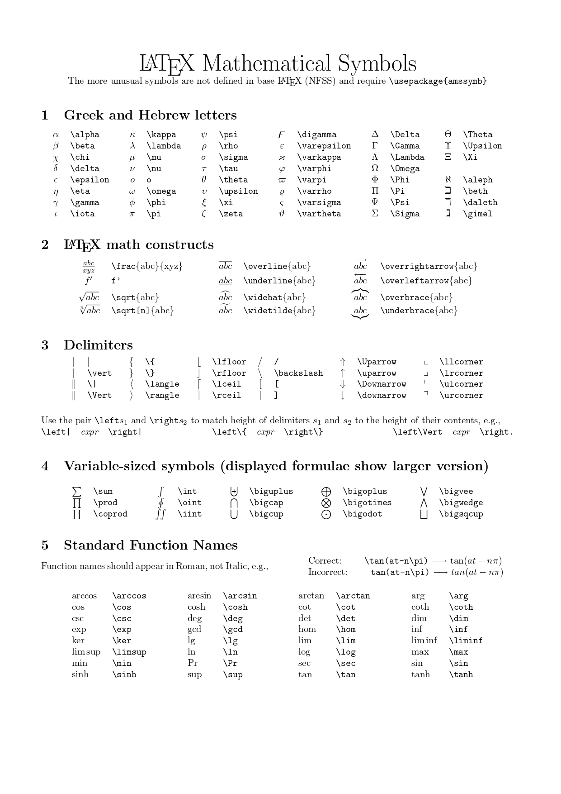
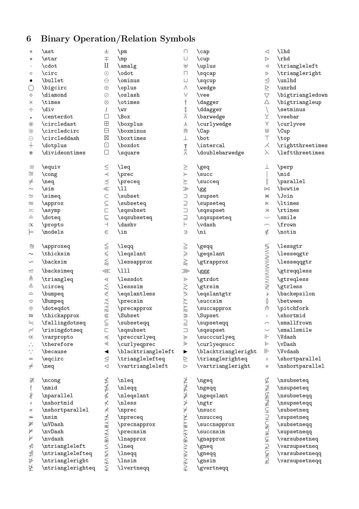
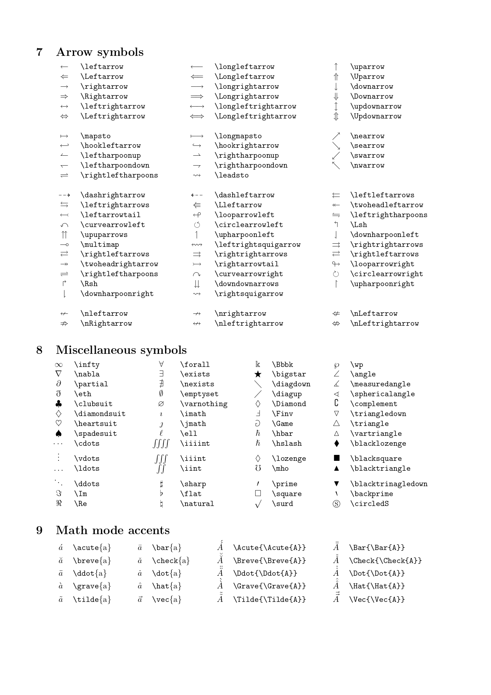
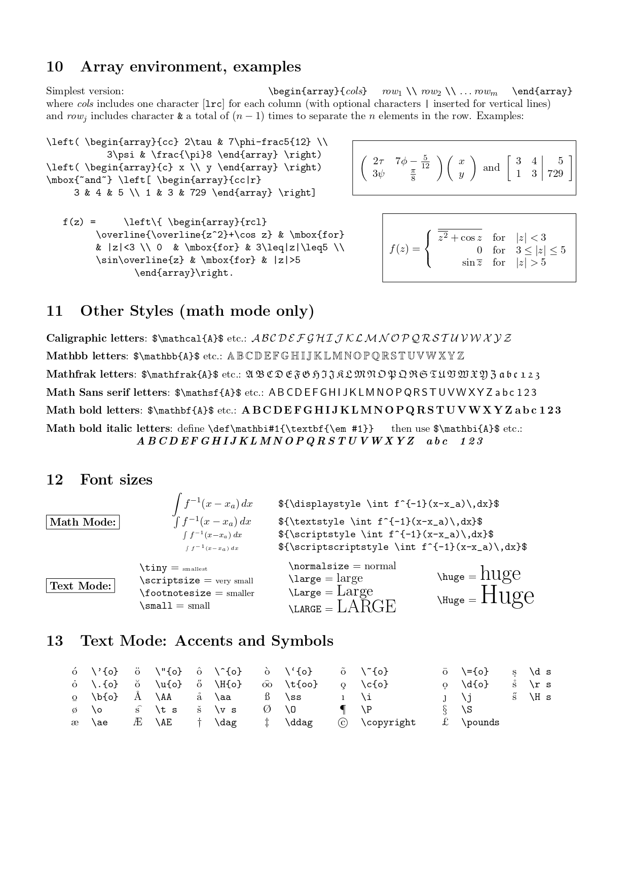

Markdown语法
标题
要创建标题，请在单词或短语前面添加井号 (#) 。# 的数量代表了标题的级别，共有6级。
不同的 Markdown 应用程序处理 # 和标题之间的空格方式并不一致。为了兼容考虑，请用一个空格在 # 和标题之间进行分隔。
在段落中填写 [TOC] 以显示全文内容的目录结构。
段落
要创建段落，请使用空白行将一行或多行文本进行分隔。
I really like using Markdown.
I think I'll use it to format all of my documents from now on.
不要用空格（spaces）或制表符（ tabs）缩进段落。如必要可以使用两个全角空格字符实体   
换行
在一行的末尾添加两个或多个空格，然后按回车键,即可创建一个换行(<br>)。
为了兼容性，请在行尾添加“结尾空格”或 HTML 的 <br> 标签来实现换行。
强调
要加粗文本，请在需要加粗部分的前后各添加两个星号 **
要用斜体显示文本，请在需要加粗部分的前后添加一个星号 *
要同时用粗体和斜体突出显示文本，请在需要加粗部分的前后各添加三个星号 ***
~~若要在单词中心放置一条水平线来删除单词，请在需要使用删除线的部分前后各添加两个波浪号~~ ~~
引用
要创建块引用，请在段落前添加一个 > 符号。
Dorothy followed her through many of the beautiful rooms in her castle.
块引用可以包含多个段落。为段落之间的空白行添加一个 > 符号。
> Dorothy followed her through many of the beautiful rooms in her castle.
>
> The Witch bade her clean the pots and kettles and sweep the floor and keep the fire fed with wood.
Dorothy followed her through many of the beautiful rooms in her castle.
The Witch bade her clean the pots and kettles and sweep the floor and keep the fire fed with wood.
块引用可以嵌套。在要嵌套的段落前添加一个 >> 符号。
> Dorothy followed her through many of the beautiful rooms in her castle.
>
>> The Witch bade her clean the pots and kettles and sweep the floor and keep the fire fed with wood.
块引用可以包含其他 Markdown 格式的元素。并非所有元素都可以使用，你需要进行实验以查看哪些元素有效。
列表
要创建有序列表，请在每个列表项前添加数字并紧跟一个英文句点。数字不必按数学顺序排列，但是列表应当以数字 1 起始。
- First item
- Second item
- Third item
- Indented item
- Indented item
- Fourth item
要创建无序列表，请在每个列表项前面添加 - （+或-或*或%）。缩进一个或多个列表项可创建嵌套列表。但是应该选用相同的符号
- First item
- Second item
- Third item
- Indented item
- Indented item
- Fourth item
要在保留列表连续性的同时在列表中添加另一种元素，请将该元素缩进四个空格或一个制表符
代码
要将单词或短语表示为代码，请将其包裹在反引号 (`) 中。
At the command prompt, type nano.
如果你要表示为代码的单词或短语中包含一个或多个反引号，则可以通过将单词或短语包裹在双反引号(``)中。 要创建代码块，请将代码块的每一行缩进至少四个空格或一个制表符。
围栏代码块 您在代码块之前和之后的行上使用三个反引号（```）。要添加语法突出显示，请在受防护的代码块之前的反引号旁边指定一种语言。
可以使用代码块描述文件结构：
分割线
要创建分隔线，请在单独一行上使用三个破折号 (---) ，并且不能包含其他内容。为了兼容性，请在分隔线的前后均添加空白行。
链接
链接文本放在中括号内，链接地址放在后面的括号中，链接title可选。
[超链接显示名](超链接地址 "超链接title")
链接title是当鼠标悬停在链接上时会出现的文字，这个title是可选的，它放在圆括号中链接地址后面，跟链接地址之间以空格分隔。
使用尖括号可以很方便地把URL或者email地址变成可点击的链接。
https://markdown.com.cn fake@example.com
强调 链接, 在链接语法前后增加星号。 要将链接表示为代码，请在方括号中添加反引号。
引用样式链接是一种特殊的链接，它使URL在Markdown中更易于显示和阅读。参考样式链接分为两部分：与文本保持内联的部分以及存储在文件中其他位置的部分，以使文本易于阅读。
- 引用类型的链接的第一部分使用两组括号进行格式设置。第一组方括号包围应显示为链接的文本。第二组括号显示了一个标签，该标签用于指向您存储在文档其他位置的链接。第二组括号中的标签不区分大小写，可以包含字母，数字，空格或标点符号。
- 引用类型链接的第二部分使用以下属性设置格式：
- 放在括号中的标签，其后紧跟一个冒号和至少一个空格（例如[label]:）。
- 链接的URL，可以选择将其括在尖括号中。
- 链接的可选标题，可以将其括在双引号，单引号或括号中。
不同的 Markdown 应用程序处理URL中间的空格方式不一样。为了兼容性，请尽量使用%20代替空格。
页内超链接 在你准备跳转到的指定标题后插入锚点{#标记}，然后在文档的其它地方写上连接到锚点的链接。
图片
要添加图像，请使用感叹号 (!), 然后在方括号增加替代文本，图片链接放在圆括号里，括号里的链接后可以增加一个可选的图片标题文本。

给图片增加链接，请将图像的Markdown 括在方括号中，然后将链接添加在圆括号中。
[](链接)
表格
要添加表，请使用三个或多个连字符（---）创建每列的标题，并使用管道（|）分隔每列。您可以选择在表的任一端添加管道。
| Syntax | Description |
|---|---|
| Header | Title |
| Paragraph | Text |
您可以通过在标题行中的连字符的左侧，右侧或两侧添加冒号（:），将列中的文本对齐到左侧，右侧或中心。
| Syntax | Description | Test Text |
| :--- | :----: | ---: |
| Header | Title | Here's this |
| Paragraph | Text | And more |
| Syntax | Description | Test Text |
|---|---|---|
| Header | Title | Here's this |
| Paragraph | Text | And more |
- 您可以在表格中设置文本格式。例如，您可以添加链接，代码（仅反引号（`）中的单词或短语，而不是代码块）和强调。
- 您不能添加标题，块引用，列表，水平规则，图像或HTML标签。
- 您可以使用表格的HTML字符代码（
|）或使用转义字符（\|）在表中显示竖线（|）字符。 - 表格单元格里换行可以借助于 HTML 里的
<br />实现
任务列表
任务列表使您可以创建带有复选框的项目列表。在支持任务列表的Markdown应用程序中，复选框将显示在内容旁边。要创建任务列表，请在任务列表项之前添加破折号-和方括号[ ]，并在[ ]前面加上空格。要选择一个复选框，请在方括号[x]之间添加 x 。
- [X] Write the press release
- [ ] Update the website
- [ ] Contact the media
注脚
在需要添加注脚的文字后加上脚注名字[^注脚名字],称为加注。 然后在文本的任意位置(一般在最后)添加脚注，脚注前必须有对应的脚注名字。
注意：经测试注脚与注脚之间必须空一行，不然会失效。成功后会发现，即使你没有把注脚写在文末，经Markdown转换后，也会自动归类到文章的最后。
使用 Markdown[^1]可以效率的书写文档, 直接转换成 HTML[^2]
[^1]: Markdown 是一种纯文本标记语言
[^2]: HyperText Markup Language 超文本标记语言
使用 Markdown[^1]可以效率的书写文档, 直接转换成 HTML[^2]
注释
不是很推荐在markdown中使用注释，除非确实有必要
①Html隐藏
<div style="display:none">这是一段注释</div>
②Xml注释
③Markdown reference Links
在reference形式中，链接(link)分成了展示部分和引用部分，其中引用(reference)部分是不直接显示出来的。
内嵌 HTML 标签
对于 Markdown 涵盖范围之外的标签，都可以直接在文件里面用 HTML 本身。如需使用 HTML，不需要额外标注这是 HTML 或是 Markdown，只需 HTML 标签添加到 Markdown 文本中即可。 Markdown 语法在 HTML 区块标签中将不会被进行处理
转义字符
要显示原本用于格式化 Markdown 文档的字符，请在字符前面添加反斜杠字符 \ 。
可转义字符: \ ` * _ {} [] () # + - . ! |
在 HTML 文件中，有两个字符需要特殊处理： < 和 & 。 < 符号用于起始标签，& 符号则用于标记 HTML 实体，如果你只是想要使用这些符号，要使用实体的形式，像是 < 和 &
  代表半角空格，  代表全角空格。
分页
HTML表格
使用HTML表格可以实现更加强大的效果，不过有些效果（如文字颜色等）需要markdown编译器的支持
<table style="text-align: center; margin-left: 175px;">
<caption>国际单位制</caption>
<tr>
<th rowspan="2">基本量</th>
<th rowspan="2">基本量纲</th>
<th colspan="2">SI单位</th>
</tr>
<tr>
<th>名称</th>
<th>符号</th>
</tr>
<tr>
<td>长度</td>
<td>L</td>
<td>米</td>
<td>m</td>
</tr>
<tr>
<td>质量</td>
<td>M</td>
<td>千克</td>
<td>kg</td>
</tr>
</table>
| 基本量 | 基本量纲 | SI单位 | |
|---|---|---|---|
| 名称 | 符号 | ||
| 长度 | L | 米 | m |
| 质量 | M | 千克 | kg |
| 时间 | T | 秒 | s |
| 电流 | I | 安[培] | A |
| 温度 | O | 开[尔文] | K |
| 物质的量 | N | 摩[尔] | mol |
| 发光强度 | J | 坎[德拉] | cd |
HTML图片
Markdown格式生成的图片默认居左对齐，大小受图片实际大小限制。如果只指定宽度或高度，另一个按照长宽比自动设定
<div><img style="width: 300px; height: 500px" src=".\image/latex_page-0001.jpg" alt="图片案例"/></div>
<table>
<tr>
<td style="text-align: center;" width="600px" height="initial"> <!-- 设置文字居中、容器的长度与宽度 -->
<img style="float: left; width: 300px; height: 500px" src=".\image/latex_page-0001.jpg" alt="图片案例"/>
<!-- 设置图片居左、图片的长度与宽度 -->
<span>
可以实现图文混排<br>
使用br标签换行
</span>
</td>
</tr>
</table>
markdown的内容...
<div style="display: table; text-align: center; border: none 0px; width: 600px; height: 500px;">
<img style="float: left; width: 300px; height: 500px" src=".\image/latex_page-0001.jpg" alt="图片案例" title="鼠标悬停文字"/>
<div style="display: inline-block; width: 300px; height: 500px;">
可以实现图文混排<br>
使用br标签换行
</div>
</div>
markdown的内容...

使用br标签换行
python提取指定标题
import re
def extract_section(input_file, output_file, target_heading):
"""
从 Markdown 文件中提取从指定标题开始到遇到更高级别标题为止的内容，并保存到新文件中。
忽略代码块中的内容。
:param input_file: 输入的 Markdown 文件路径
:param output_file: 输出的 Markdown 文件路径
:param target_heading: 目标标题（支持 #、##、### 等）
"""
with open(input_file, 'r', encoding='utf-8') as file:
content = file.read()
# 移除代码块内容（以 ``` 或 ~~~ 包裹的内容）
code_block_pattern = r"(```.*?```|~~~.*?~~~)"
content_without_code = re.sub(code_block_pattern, lambda m: ' ' * len(m.group(0)), content, flags=re.S)
# 匹配目标标题的正则表达式
pattern = rf"^(#+)\s+{re.escape(target_heading)}\s*.*?$" # 匹配指定标题
matches = re.finditer(pattern, content_without_code, re.MULTILINE)
for match in matches:
heading_level = len(match.group(1)) # 获取标题级别（# 的数量）
start_pos = match.start() # 标题的起始位置
# 查找下一个更高级别的标题（# 数量更少的标题）
next_heading_pattern = rf"^(#{{1,{heading_level - 1}}})\s+.*?$"
next_match = re.search(next_heading_pattern, content_without_code[match.end():], re.MULTILINE)
if next_match:
end_pos = match.end() + next_match.start()
else:
end_pos = len(content) # 如果没有更高级别标题，则提取到文件末尾
# 提取内容（从原始内容中提取，而不是从移除代码块的内容中提取）
extracted_content = content[start_pos:end_pos].strip()
# 写入到输出文件
with open(output_file, 'w', encoding='utf-8') as output:
output.write(extracted_content)
print(f"提取成功，内容已保存到 {output_file}")
return
print(f"未找到标题 '{target_heading}' 的内容。")
# 示例用法
input_md_file = "input.md" # 输入的 Markdown 文件路径
output_md_file = "output.md" # 输出的 Markdown 文件路径
heading_to_extract = "四级标题" # 替换为你想提取的标题
extract_section(input_md_file, output_md_file, heading_to_extract)
Markdown中的LaTex
LaTeX 公式写法有两种，一种是用在正文中的，一种是单独显示的
\displaystyle 转义符\（反斜杠）+“关键词”
几乎所有latex语法都能够嵌套 \alpha要跟符号（包括空格符），不能直接跟字母，不推荐接数字
默认字体(罗马斜体) ABCabc123 \mathrm{ABCabc123}
字体加粗 \boldsymbol{ABCabc123} 直立的 \textup{ABCabc123} 意大利斜体 \textit{ABCabc123}\mathit{ABCabc123} 斜体 \textstyle{ABCabc123}
等宽 \mathtt{ABCabc123} \texttt{} 黑体 \mathbf{ABCabc123} \textbf{} 黑板报体 \mathbb{ABCabc123} 罗马体 \mathrm{ABCabc123} \textrm{} \text{} 无衬线体 \mathsf{ABCabc123} \textsf{} 手写体 \mathcal{ABCabc123} 哥特字体 \mathfrak{ABCabc123} 哥特字体 \scriptstyle{ABCabc123} \scriptscriptstyle{ABCabc123}
字号尺寸 {\tiny abc\text{极小}tiny} {\scriptsize abc \text{超小} scriptsize} {\small abc \text{小} small} {\normalsize abc \text{正常} normal} {\large abc \text{大} large} {\Large abc \text{超大} Large} {\LARGE abc \text{特大} LARGE} {\huge abc \text{巨大} huge} {\Huge abc \text{巨无霸} Huge}
   
\omicron
空集\varnothing \varnothing
或 \lor、与 \land、非 \lnot
\nabla \Delta \mathcal{L} \mathscr{L}
行内公式： \lim_{ n \to \infty },\lim\limits_{ n \to \infty } 或者 \displaystyle \lim_{ n \to \infty }
latex文字上面，下面大括号用法 \varphi(e_{i})=(f_{1}(e_{i}),\cdot\cdot\cdot, f_{n}(e_{i}))=( \overbrace{ 0,\cdot\cdot\cdot,0 }^{i-1\text{个}},1,0,\cdot\cdot\cdot,0), i=1,2,\cdot\cdot\cdot,n.
不同的"frac"会生成不同大小的分式。\tfrac \frac \dfrac \cfrac "d"代表"display"，会生成一个比较大的适合显示的分数： \dfrac{3}{7} "t"代表"text"，会生成一个比较小的适合在一行文字内显示的分数： \tfrac{3}{7} 还有一个\cfrac命令是用于连分数的，"c"代表"continued" \cfrac{3}{7+\cfrac{3}{7+\cfrac{3}{7+\ldots}}} \cfrac 在 \dfrac 的基础上添加了可让分子左对齐或右对齐的可选参数：[l] 左对齐、[r] 右对齐\cfrac[l]1{1111}+\cfrac[r]1{1111}
弧线 Latex可以通过以下方式实现：
上面这种方式在markdown中并不支持，这里提供另外的两种思路：
\mathop{\frown}\limits_{AB} \mathop{AB}\limits^{\frown}
公式中括号的应用，可以用一系列命令 (\big, \Big, \bigg, \Bigg) 改变括号大
小
也可以用自动模式自动调节大小 \left( 3+\dfrac{7x+5}{1+y^2} \right)
用“”与“”显示公式，可以自动居中，括号必须成对出现，如果在一行中只
有一半的括号，则要添加对应的“影子括号”，例如在一行中有“\left(”，则要在后面添加“\right.”
分隔符\middle $$ P=\left(A=2|\frac{A^2}{B}>4\right) $$ $$ P=\left(A=2\middle|\frac{A^2}{B}>4\right) $$
向量a使用\boldsymbol{a} \mathbf的渲染效果是加粗的正体字符，而\boldsymbol的渲染效果是加粗的斜体字符
\tbinom{n}{r} C_{n}^{r} {n \choose r} \varnothing\emptyset
[^1]: Markdown 是一种纯文本标记语言
[^2]: HyperText Markup Language 超文本标记语言